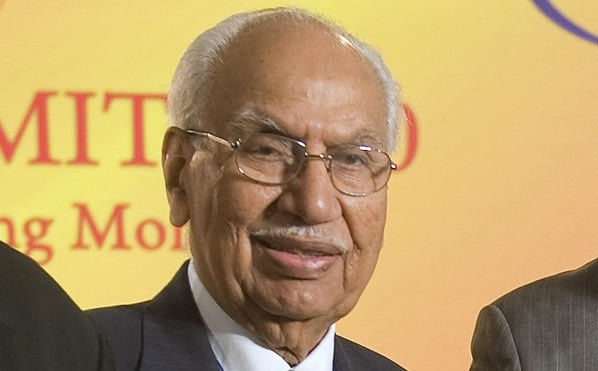

In 1954, Hero Cycles moved up the value chain by making a shift from supplying to manufacturing handlebars, front forks and chains. In 1956, the Punjab Government issued tender notices for twelve new industrial licenses to make bicycles in Ludhiana. Munjal and his brothers participated in the bid and won the contract. Hero Cycles was registered as a large-scale industrial unit. with capital partly financed by the Government of Punjab.
In 1961, Rockman Cycles Industries was established to manufacture bicycle chains and hubs. Under Munjal's leadership, Hero Cycles was the first company to export bicycles on such a large scale. In 1975, the company had become the largest bicycle manufacturer in India. By 1986, Hero Cycles entered the Guinness Book of Records as the largest manufacturers of bicycles in the world.
Before entering into a joint venture with Honda Motors, Munjal started Majestic Auto and started manufacturing the Hero Majestic Moped. To manufacture motor cycles in 1984, the Hero Group started a joint venture with Hero Honda and established a plant at Dharuhera, Haryana. The Hero Group became so large that by 2002 it had sold 8.6 million bicycles, and was producing 16,000 motorcycles a day.
After the Hero Honda Motors joint venture broke up in August 2011, Hero's board of directors agreed to pay royalties to Honda to continue to produce the Hero Honda until 2013,[4] due to the popularity and ubiquity of the Hero Honda brand in the Asia Pacific region.
The separation gave an opportunity for Hero to expand its market globally with the name Hero MotoCorp. Previously, it had not been permitted for Hero Honda to sell their bikes outside the Asia Pacific and in countries where Honda operated.
In the first week of August 2013, the company recorded a benchmark never before reached by an Indian two-wheel vehicle industry manufacturer, by producing 50 million bikes.
Brijmohan was married to Santosh and had five children: Raman Kant (deceased), Suman Kant, Pawan Kant, ssoothuSunil Kant and a daughter, Geeta Anand.He died on 1 November 2015 in South Delhi after a short illness.